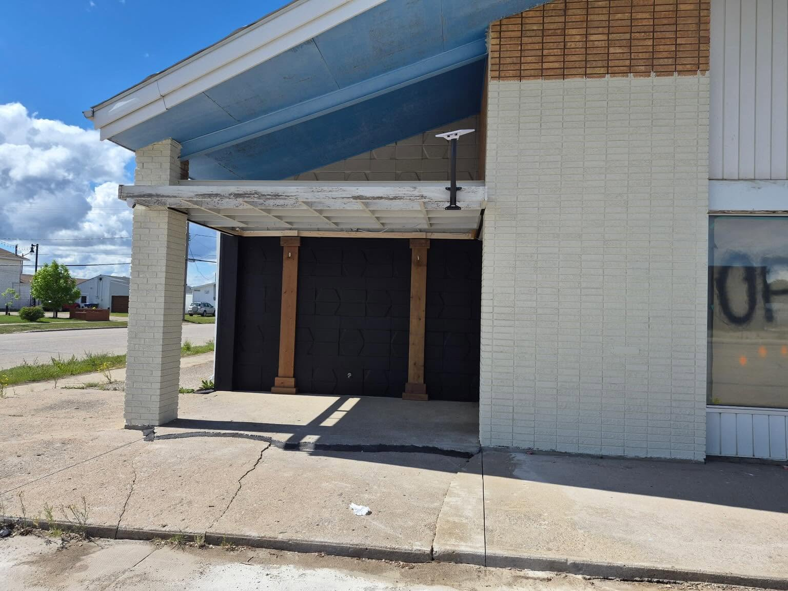
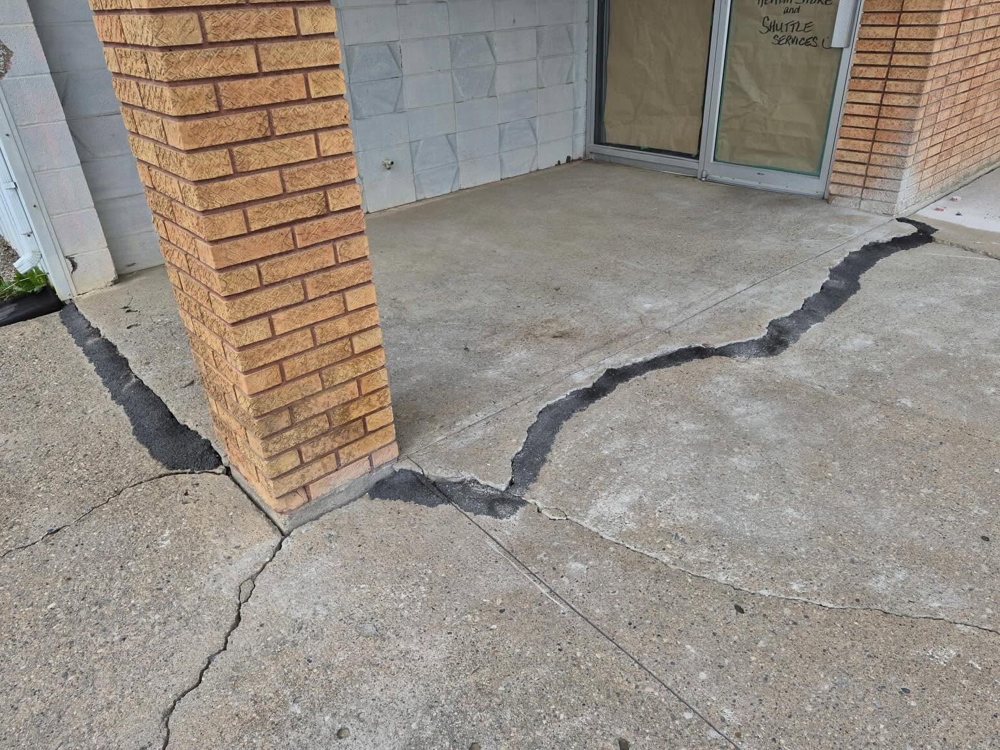

Our Services
Natural products for your body and home, reliable transportation across Saskatchewan, and dependable repairs when you need them.
At Chosen Holistic Services, everything we offer is rooted in one goal: supporting your wellbeing and keeping you connected. Scroll down to explore our holistic product line, our shuttle service, and our glass & handyman repairs.
Holistic Products
We carry a hand-picked selection of quality products — chosen because they work, and because we trust what's in them. Supporting your health naturally, from the inside out and throughout your home.
Supplements
High-quality nutritional supplements to support your body's natural balance. From daily essentials to targeted support, we carry products chosen for their purity and effectiveness.
Vitamins
Fill the gaps in your daily nutrition with trusted vitamins and minerals. Whether you're looking for vitamin D, B-complex, omega-3s, or a comprehensive multi, we can help you find the right fit.
Natural Cleaning Products
Keep your home clean without the harsh chemicals. Our natural cleaning products are safe for your family, gentle on surfaces, and better for the environment — without sacrificing effectiveness.
Not sure where to start? We're happy to answer questions and help you find the right products for your needs. Reach out anytime.

Shuttle Service
Getting to the city shouldn't be a barrier. Our shuttle service offers safe, comfortable, and affordable transportation from Nipawin and surrounding towns — including Melfort, Tisdale, White Fox, Love, and Carrot River — to Prince Albert and Saskatoon.
Whether you're heading to a medical appointment, doing your shopping, or visiting family, we'll get you there and back with care.
Good to Know
Here's what you can expect when you ride with us:
- Call (306) 862-2222 or Tammy's cell at (306) 812-0196 to book your seat
- A non-refundable payment is required the week before your scheduled route
- Two stops included per person — additional stops are $10 each
- Complimentary water bottle and snack, plus coffee service at one location
- We accept cash, debit, credit card, or e-transfer
- Safe, clean, comfortable, and punctual — we aim to make your day relaxing and enjoyable
Have a group? Special trip? Just ask — we're flexible and happy to work with your needs.
Enquire About a Trip →Glass & Handy-Man
Glass is Tim Peters's trade. He's spent 35 years as a glass glazier — cutting, installing, and removing glass and mirrors in homes, businesses, and cars, from windows and glass doors to shower screens — and that expertise anchors everything he does as our resident handyman. When he and his wife Tammy moved from BC to start Chosen Holistic Services in Nipawin — Tim's hometown — he put those skills straight to work, personally renovating our new headquarters, the former Sask Power building.
From glass and window installation to general repairs and carpentry — if it needs fixing, building, or installing, Tim can take care of it for your home or business too.
Meet Tim
Tim "the Handyman" Peters is a glass glazier with 35 years of experience, and he brings that hands-on craftsmanship to every job. He and his wife Tammy recently relocated from BC to start Chosen Holistic Services in Tim's hometown of Nipawin, and he's personally taking on the full renovation of our new business — the old Sask Power building.
Have a project in mind? Reach out for a free estimate.
Glass & Window Work
Tim's specialty — 35 years as a glass glazier. Windows, glass doors, mirrors, shower screens, and auto glass: cut, installed, repaired, or replaced.
General Repairs
From squeaky doors to loose railings, no job is too small to fix right.
Carpentry & Renovations
Framing, trim, and full renovation projects, big or small.
Renovating Our New Nipawin Headquarters
Tim and Tammy relocated from BC to open Chosen Holistic Services in Tim's hometown of Nipawin, in the old Sask Power building — and Tim's been renovating it himself, top to bottom. Here's a look at his work in progress.

Storefront Entryway Renovation
Foundation Crack RepairMore of What Tim Can Do
Have a Question?
Whether it's about our products or booking a shuttle, we're always happy to chat. Reach out and let us know how we can help.
Contact Us